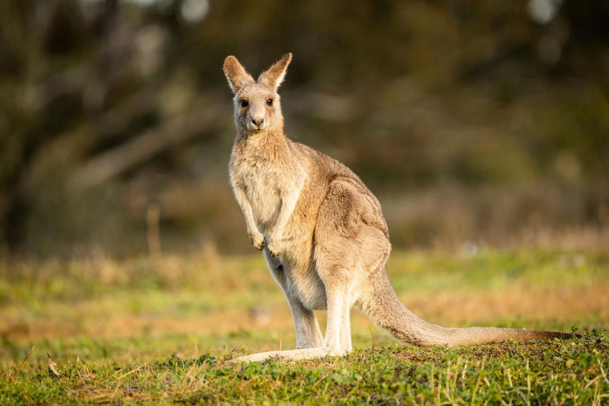
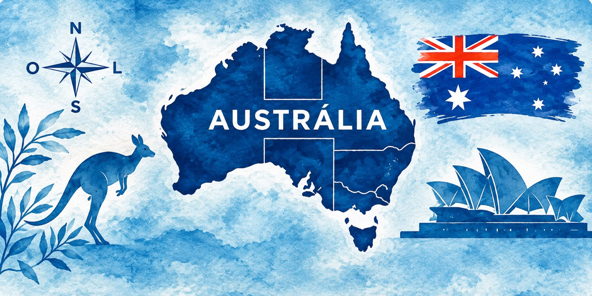

Cangurus
Os cangurus são animais muito conhecidos e são um dos símbolos da Austrália.

Capital: Canberra
Idioma: Inglês
Moeda: Dólar australiano
Continente: Oceania

Os cangurus são animais muito conhecidos e são um dos símbolos da Austrália.

É o maior sistema de recifes de coral do mundo e fica na costa australiana.

O país possui pessoas de diferentes origens, culturas e costumes.

Construção famosa e um dos principais cartões-postais da Austrália.

Praia conhecida pelo mar, pelo surfe e pela paisagem.

Grande formação rochosa localizada no interior da Austrália.